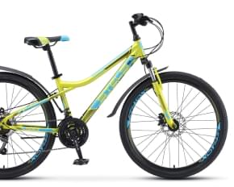
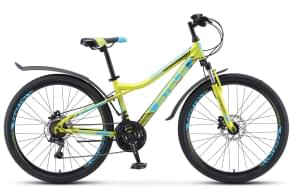

 
Велосипед STELS Navigator 510 HD 26 2022
Данный велосипед с колесами 26 дюймов хорошо подходит высоким подросткам. Прогиб рамы и небольшой размер рамы расчитан на рост от 135 до 165 см.
Суммарный вес велосипеда был снижен до 16,9 кг, так как рама была изготовлена с учетом использования велосипеда подростками.
Характеристики
- Двойной обод
- Алюминиевый сплав
- Колёса диаметром 26 дюймов
- Покрышки 26х1,95"